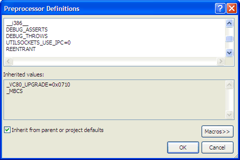

Related YoLinux Tutorials:
Free Information Technology Magazines and Document Downloads
| Description: |
Sockets are an inter-process network communication implementation using a Internet Protocol (IP) stack on an Ethernet transport. Sockets are language and protocol independent and available to "C", Perl, Python, Ruby and Java (and more) programmers. The "C" language BSD API is used on Linux, all popular variants of Unix, Microsoft Windows (NT,2000,XP,... and later) and even embedded OSs like VxWorks. It is by far the most popular implementation of inter-process network communication.
Sockets allow one process to communicate with another whether it is local on the same computer system or remote over the network. Many other higher level protocols are built upon sockets technology.
The sockets API provides many configuration options so we will try and cover the socket API components and then give examples of a few implementations. It would be very difficult to cover all variations of its use.
Sockets utilize the following standard protocols:
-
Protocol Description IP Internet Protocol provides network routing using IP addressing eg 192.168.1.204 UDP User Datagram Protocol - IP with ports to distinguish among processes running on same host. No data verification. TCP Transmission Control Protocol - IP with ports to distinguish among processes running on same host. Connection oriented, stream transfer, full duplex, reliable with data verification.
| BSD socket API: |
Typically one configures a socket server to which a socket client may attach and communicate. The IP protocol layer will also require that the domain name or IP addresses of the communicating processes be made known as well. Within the IP protocol it is also important to provide the mechanism used: TCP or UDP.
The BSD is a "C" programming API. Examples shown are compiled using the GNU C++ compiler on Linux:
Basic steps in using a socket:
- Socket include files:
Include File Description sys/types.h Types used in sys/socket.h and netinet/in.h netinet/in.h Internet domain address structures and functions netinet/tcp.h Socket option macro definitions, TCP headers, enums, etc sys/socket.h Structures and functions used for socket API.i accept(), bind(), connect(), listen(), recv(), send(), setsockopt(), shutdown(), etc ... netdb.h Used for domain/DNS hostname lookup sys/select.h Used by the select(), pselect() functions and defines FD_CLR, FD_ISSET, FD_SET, FD_ZERO macros sys/time.h select() uses argument of type struct timeval and pselect() uses struct timespec defined by this include file. arpa/inet.h Definitions for internet operations. Prototypes functions such as htonl(), htons(), ntohl(), ntohs(), inet_addr(), inet_ntoa(), etc ... unistd.h Defines constants and types errno.h Defines sytem error numbers - Create the socket instance:
Open a socket using TCP: Basic declarations and call to "socket".
Socket function prototype:01#include <iostream>02#include <sys/types.h> // Types used in sys/socket.h and netinet/in.h03#include <netinet/in.h> // Internet domain address structures and functions04#include <sys/socket.h> // Structures and functions used for socket API05#include <netdb.h> // Used for domain/DNS hostname lookup06#include <unistd.h>07#include <errno.h>0809usingnamespacestd;1011main()12{13intsocketHandle;1415// create socket1617if((socketHandle = socket(AF_INET, SOCK_STREAM, IPPROTO_IP)) < 0)18{19close(socketHandle);20exit(EXIT_FAILURE);21}2223...24...25}- int socketHandle = socket(int socket_family, int socket_type, int protocol);
- Internet IPV4: AF_INET
- Internet IPV6: AF_INET6
- Unix path name (communicating processes are on the same system): AF_UNIX
- TCP: SOCK_STREAM
- UDP: SOCK_DGRAM
- Raw protocol at network layer: SOCK_RAW
- Internet Protocol (IP): 0 or IPPROTO_IP
- ICMP: 1
- ...
- Configure the socket as a client or server:
Comparison of sequence of BSD API calls:
-
Socket Server Socket Client socket() socket() bind() gethostbyname() listen() accept() connect() recv()/send() recv()/send() close() close()
This is specific to whether the application is a socket client or a socket server.
- Socket server:
- bind(): bind the socket to a local socket address. This assigns a name to the socket.
- listen(): listen for connections on a socket created with "socket()" and "bind()" and accept incoming connections. This is used for TCP and not UDP. Zero is returned on success.
- accept(): accept a connection on a socket. Accept the first connection request on the queue of pending connections, create a new connected socket with mostly the same properties as defined by the call to "socket()", and allocate a new file descriptor for the socket, which is returned. The newly created socket is no longer in the listening state. Note this call blocks until a client connects.
-
Socket functions:01...02...03#define MAXHOSTNAME 25604...05...0607structsockaddr_in socketAddress;08charsysHost[MAXHOSTNAME+1];// Hostname of this computer we are running on09structhostNamePtr *hPtr;10intportNumber = 8080;1112bzero(&socketInfo,sizeof(sockaddr_in));// Clear structure memory1314// Get system information1516gethostname(sysHost, MAXHOSTNAME);// Get the name of this computer we are running on17if((hPtr = gethostbyname(sysHost)) == NULL)18{19cerr <<"System hostname misconfigured."<< endl;20exit(EXIT_FAILURE);21}2223// Load system information into socket data structures2425socketInfo.sin_family = AF_INET;26// Use any address available to the system. This is a typical configuration for a server.27// Note that this is where the socket client and socket server differ.28// A socket client will specify the server address to connect to.29socketInfo.sin_addr.s_addr = htonl(INADDR_ANY);// Translate long integer to network byte order.30socketInfo.sin_port = htons(portNumber);// Set port number3132// Bind the socket to a local socket address3334if( bind(socketHandle, (structsockaddr *) &socketInfo,sizeof(structsockaddr_in)) < 0)35{36close(socketHandle);37perror("bind");38exit(EXIT_FAILURE);39}4041listen(socketHandle, 1);4243intsocketConnection;44if( (socketConnection = accept(socketHandle, NULL, NULL)) < 0)45{46close(socketHandle);47exit(EXIT_FAILURE);48}4950...51...5253// read/write to socket here- bind():
Function prototype:- int bind(int sockfd, struct sockaddr *my_addr, socklen_t addrlen);
- int sockfd: Socket file descriptor. Returned by call to "socket".
- struct sockaddr: Socket information structure
- socklen_t addrlen: Size of structure
- Returns 0: Sucess, -1: Failure and errno may be set.
- listen():
Function prototype:- int listen(int s, int backlog);
- int s: Socket file descriptor. Returned by call to "socket". Identifies a bound but unconnected socket.
- int backlog: Set maximum length of the queue of pending connections for the listening socket. A reasonable value is 10.
Actual maximum permissible: SOMAXCONN
Example: int iret = listen(socketHandle, SOMAXCONN);
The include file sys/socket.h will include /usr/include/bits/socket.h which defines the default value for SOMAXCONN as 128.
The actual value set for the operating system: cat /proc/sys/net/core/somaxconn
In kernels before 2.4.25, this limit was a hard coded value and thus would require a kernel recompile with the SOMAXCONN value as defined in /usr/include/linux/socket.h
For very heavy server use, modify the system limit in the proc file and set "backlog" to the same value (eg. 512). - Returns 0: Sucess, -1: Failure and errno may be set.
- accept():
Function prototype:- int accept(int s, struct sockaddr *addr, socklen_t *addrlen);
- int s: Socket file descriptor. Returned by call to "socket".
- struct sockaddr *addr: Pointer to a sockaddr structure. This structure is filled in with the address of the connecting entity.
- socklen_t *addrlen: initially contains the size of the structure pointed to by addr; on return it will contain the actual length (in bytes) of the address returned. When addr is NULL nothing is filled in.
- Returns:
- Success: non-negative integer, which is a descriptor of the accepted socket. Argument "addrlen" will have a return value.
- Fail: -1, errno may be set
-
bind: Address already in use
netstat -punta | grep 8080
- tcp 0 0 :::8080 :::* LISTEN
- bind():
- Socket client:
- connect(): initiate a connection with a remote entity on a socket. Zero is returned on success. Support both TCP (SOCK_STREAM) and UDP (SOCK_DGRAM). For SOCK_STREAM, an actual connection is made. For SOCK_DGRAM the address is the address to which datagrams are sent and received.
-
Connect function prototype:01...02...0304structsockaddr_in remoteSocketInfo;05structhostent *hPtr;06intsocketHandle;07char*remoteHost="dev.megacorp.com";08intportNumber = 8080;0910bzero(&remoteSocketInfo,sizeof(sockaddr_in));// Clear structure memory1112// Get system information1314if((hPtr = gethostbyname(remoteHost)) == NULL)15{16cerr <<"System DNS name resolution not configured properly."<< endl;17cerr <<"Error number: "<< ECONNREFUSED << endl;18exit(EXIT_FAILURE);19}2021// Load system information for remote socket server into socket data structures2223memcpy((char*)&remoteSocketInfo.sin_addr, hPtr->h_addr, hPtr->h_length);24remoteSocketInfo.sin_family = AF_INET;25remoteSocketInfo.sin_port = htons((u_short)portNumber);// Set port number2627if( (connect(socketHandle, (structsockaddr *)&remoteSocketInfo,sizeof(sockaddr_in)) < 0)28{29close(socketHandle);30exit(EXIT_FAILURE);31}3233...34...- int connect(int sockfd, const struct sockaddr *serv_addr, socklen_t addrlen);
- int sockfd: Socket file descriptor. Returned by call to "socket".
- struct sockaddr: Socket information structure
- socklen_t addrlen: Size of structure
- Returns 0: Sucess, -1: Failure and errno may be set.
Also see the connect man page
The sockaddr_in data structure: /usr/include/linux/in.h
-
Note:01/* Internet address. */02structin_addr {03__u32 s_addr;/* Defined as 32 or 64 bit address (system dependent) */04};0506/* Structure describing an Internet (IP) socket address. */07#define __SOCK_SIZE__ 16 /* sizeof(struct sockaddr) */08structsockaddr_in {09sa_family_t sin_family;/* Address family */10unsignedshortintsin_port;/* Port number */11structin_addr sin_addr;/* Internet address */1213/* Pad to size of `struct sockaddr'. */14unsignedchar__pad[__SOCK_SIZE__ -sizeof(shortint) -15sizeof(unsignedshortint) -sizeof(structin_addr)];16};- IP addresses: Note the specific IP address could be specified:
#include <arpa/inet.h> // IP from string conversion socketInfo.sin_addr.s_addr = inet_addr("127.0.0.1"); cout << inet_ntoa(socketInfo.sin_addr) << endl;or bind to all network interfaces available:socketInfo.sin_addr.s_addr = htonl(INADDR_ANY);
- Port numbers: Note the specific port can be specified:
socketInfo.sin_port = htons(8080); cout << ntohs(socketInfo.sin_port) << endl;or let the system define one for you:socketInfo.sin_port = htons(INADDR_ANY);
- IP addresses: Note the specific IP address could be specified:
-
- Read from or write to socket:
Use send() and recv(), or write() and read(), or sendto() and recvfrom() to read/write to/from a socket.
- TCP recv() or UDP recvfrom(): receive a message from a socket
01char*pcIpAddress;02unsignedshortshPort;0304...05...0607if(iSocketType == SOCK_STREAM)08{09rc = recv(socketHandle, (char*) _pcMessage, (int) _iMessageLength, 0);10if( rc == 0 )11{12cerr <<"ERROR! Socket closed"<< endl;13}14elseif(rc == -1)15{16cerr <<"ERROR! Socket error"<< endl;17closeSocket();18}19}20elseif(iSocketType == SOCK_DGRAM)21{22intiLength;23structsockaddr_in stReceiveAddr;24iLength = (int)sizeof(structsockaddr_in);25memset((void*) &stReceiveAddr, 0, iLength);2627rc = recvfrom(socketHandle, (char*) _pcMessage, (int) _iMessageLength, 0,28(structsockaddr *) &stReceiveAddr, (socklen_t*) &iLength))29if{ rc == 0 )30{31cerr <<"ERROR! Socket closed"<< endl;32}33elseif(rc == -1)34{35cerr <<"ERROR! Socket error"<< endl;36closeSocket();37}38}3940pcIpAddress = inet_ntoa(stReceiveAddr.sin_addr);41shPort = ntohs(stReceiveAddr.sin_port);4243cout <<"Socket Received: "<< _iNumRead <<" bytes from "44<< pcIpAddress <<":"<< shPort << endl;4546...47... - read(): read a specific number of bytes from a file descriptor
01intrc = 0;// Actual number of bytes read by function read()02intcount = 0;// Running total "count" of bytes read03intnumToRead = 32;// Number of bytes we want to read each pass04charbuf[512];0506...07...0809while(bcount < numToRead)10{11// rc is the number of bytes returned.12if( (rc = read(socketHandle, buf, numToRead - count)) > 0);13{14count += rc;15buf += rc;// Set buffer pointer for next read16}17elseif(rc < 0)18{19close(socketHandle);20exit(EXIT_FAILURE);21}2223cout <<"Number of bytes read: "<< count << endl;24cout <<"Received: "<< buf << endl;25}2627...28... - send(): send a message from a socket. Used only when in a
connected state. The only difference between send and write is
the presence of flags. With zero flags parameter, send is equivalent
to write.
01#include <string.h>0203...04...0506charbuf[512];0708strcpy(buf,"Message to send");0910...11...1213send(socketHandle, buf,strlen(buf)+1, 0);1415...16... - TCP send() or UDP sendto():
01intiSocketType;02intiBytesSent = 0;03char*pMessage ="message to send";04intiMessageLength = 16;// number of bytes (includes NULL termination)05sockaddr pSendAddress;0607...08...0910if(iSocketType == SOCK_STREAM)11{12if((iBytesSent = send(socketHandle, (char*) pMessage, (int) iMessageLength, 0)) < 0 )13{14cerr <<"Send failed with error "<<errno<< endl;15close(socketHandle);16}17}18elseif(iSocketType == SOCK_DGRAM)19{20if((iBytesSent = sendto(socketHandle, (char*) pMessage,21(int) iMessageLength,220,23(structsockaddr*) pSendAddress,24(int)sizeof(structsockaddr_in))) < 0 )25{26cerr <<"Sendto failed with error "<<errno<< endl;27close();28}29}30else31{32// Failed - Socket type not defined33}3435...36...
- TCP recv() or UDP recvfrom(): receive a message from a socket
- Close the socket when done:
This is the "C" library function to close a file descriptor. Returns zero on success, or -1 if an error occurred.1#include <unistd.h>23...45close(socketHandle);67...
| Socket Server: |
Simple Socket Server:
-
File: server.cpp
01#include <iostream>02#include <sys/types.h>03#include <sys/socket.h>04#include <netdb.h>05#define MAXHOSTNAME 25606usingnamespacestd;0708main()09{10structsockaddr_in socketInfo;11charsysHost[MAXHOSTNAME+1];// Hostname of this computer we are running on12structhostent *hPtr;13intsocketHandle;14intportNumber = 8080;1516bzero(&socketInfo,sizeof(sockaddr_in));// Clear structure memory1718// Get system information1920gethostname(sysHost, MAXHOSTNAME);// Get the name of this computer we are running on21if((hPtr = gethostbyname(sysHost)) == NULL)22{23cerr <<"System hostname misconfigured."<< endl;24exit(EXIT_FAILURE);25}2627// create socket2829if((socketHandle = socket(AF_INET, SOCK_STREAM, 0)) < 0)30{31close(socketHandle);32exit(EXIT_FAILURE);33}3435// Load system information into socket data structures3637socketInfo.sin_family = AF_INET;38socketInfo.sin_addr.s_addr = htonl(INADDR_ANY);// Use any address available to the system39socketInfo.sin_port = htons(portNumber);// Set port number4041// Bind the socket to a local socket address4243if( bind(socketHandle, (structsockaddr *) &socketInfo,sizeof(socketInfo)) < 0)44{45close(socketHandle);46perror("bind");47exit(EXIT_FAILURE);48}4950listen(socketHandle, 1);5152intsocketConnection;53if( (socketConnection = accept(socketHandle, NULL, NULL)) < 0)54{55exit(EXIT_FAILURE);56}57close(socketHandle);5859intrc = 0;// Actual number of bytes read60charbuf[512];6162// rc is the number of characters returned.63// Note this is not typical. Typically one would only specify the number64// of bytes to read a fixed header which would include the number of bytes65// to read. See "Tips and Best Practices" below.6667rc = recv(socketConnection, buf, 512, 0);68buf[rc]= (char) NULL;// Null terminate string6970cout <<"Number of bytes read: "<< rc << endl;71cout <<"Received: "<< buf << endl;72}
Forking Socket Server:
In order to accept connections while processing previous connections, use fork() to handle each connection.
-
Use establish() and get_connection() to allow multiple connections.
File: serverFork.cpp01#include <iostream>02#include <sys/types.h>03#include <sys/socket.h>04#include <sys/wait.h>05#include <netdb.h>06#include <errno.h>07#include <unistd.h>08#include <signal.h>09#include <netinet/in.h>10#define MAXHOSTNAME 25611usingnamespacestd;1213// Catch signals from child processes14voidhandleSig(intsignum)15{16while(waitpid(-1, NULL, WNOHANG) > 0);17}1819main()20{21structsockaddr_in socketInfo;22charsysHost[MAXHOSTNAME+1];// Hostname of this computer we are running on23structhostent *hPtr;24intsocketHandle;25intportNumber = 8080;2627signal(SIGCHLD, handleSig);2829bzero(&socketInfo,sizeof(sockaddr_in));// Clear structure memory3031// Get system information3233gethostname(sysHost, MAXHOSTNAME);// Get the name of this computer we are running on34if((hPtr = gethostbyname(sysHost)) == NULL)35{36cerr <<"System hostname misconfigured."<< endl;37exit(EXIT_FAILURE);38}3940// create socket4142if((socketHandle = socket(AF_INET, SOCK_STREAM, 0)) < 0)43{44close(socketHandle);45exit(EXIT_FAILURE);46}4748// Load system information into socket data structures4950socketInfo.sin_family = AF_INET;51socketInfo.sin_addr.s_addr = htonl(INADDR_ANY);// Use any address available to the system52socketInfo.sin_port = htons(portNumber);// Set port number5354// Bind the socket to a local socket address5556if( bind(socketHandle, (structsockaddr *) &socketInfo,sizeof(structsockaddr_in)) < 0)57{58close(socketHandle);59perror("bind");60exit(EXIT_FAILURE);61}6263listen(socketHandle, 1);6465intsocketConnection;66for(;;)// infinite loop to handle remote connections. This should be limited.67{68if( (socketConnection = accept(socketHandle, NULL, NULL)) < 0)69{70close(socketHandle);71if(errno== EINTR)continue;72perror("accept");73exit(EXIT_FAILURE);74}75switch(fork())76{77case-1:78perror("fork");79close(socketHandle);80close(socketConnection);81exit(EXIT_FAILURE);82case0:// Child process - do stuff83close(socketHandle);84// Do your server stuff like read/write messages to the socket here!85exit(0);86default:// Parent process, look for another connection87close(socketConnection);88continue;89}90}9192}
| Socket Client: |
Simple Socket client:
-
File: client.cpp
01#include <iostream>02#include <string.h>03#include <sys/types.h>04#include <sys/socket.h>05#include <netdb.h>06#include <unistd.h>07#include <errno.h>08#define MAXHOSTNAME 25609usingnamespacestd;1011main()12{13structsockaddr_in remoteSocketInfo;14structhostent *hPtr;15intsocketHandle;16char*remoteHost="localhost";17intportNumber = 8080;1819bzero(&remoteSocketInfo,sizeof(sockaddr_in));// Clear structure memory2021// Get system information2223if((hPtr = gethostbyname(remoteHost)) == NULL)24{25cerr <<"System DNS name resolution not configured properly."<< endl;26cerr <<"Error number: "<< ECONNREFUSED << endl;27exit(EXIT_FAILURE);28}2930// create socket3132if((socketHandle = socket(AF_INET, SOCK_STREAM, 0)) < 0)33{34close(socketHandle);35exit(EXIT_FAILURE);36}3738// Load system information into socket data structures3940memcpy((char*)&remoteSocketInfo.sin_addr, hPtr->h_addr, hPtr->h_length);41remoteSocketInfo.sin_family = AF_INET;42remoteSocketInfo.sin_port = htons((u_short)portNumber);// Set port number4344if(connect(socketHandle, (structsockaddr *)&remoteSocketInfo,sizeof(sockaddr_in)) < 0)45{46close(socketHandle);47exit(EXIT_FAILURE);48}4950intrc = 0;// Actual number of bytes read by function read()51charbuf[512];5253strcpy(buf,"Message to send");54send(socketHandle, buf,strlen(buf)+1, 0);55}
| Test Simple Client and Server Socket program: |
Note that this runs on a single system using "localhost".
Compile the simple client and the simple server:- g++ server.cpp -o server
- g++ client.cpp -o client
This will block at the "accept()" call and await a connection from a client.
Start the client: ./client
This will connect to the server and write the message "Message to send".
The server will receive the message and write it out.
| Name Resolution and Network Information Lookup: |
Network information data lookup for:
- DNS: Name resolution associates IP address to a hostname using DNS (Domain Name System) name servers. Name resolution invokes a series of library routines to query the name servers.
- TCP/IP ports and associated services
- Network Protocols
- Network name information
| Function | Description |
|---|---|
| gethostname(char *name, size_t len) | returns hostname of local host |
| getservbyname(const char *name,const char *proto) | returns a structure of type servent for the given host name and protocol |
| gethostbyname(const char *name) | returns a structure of type hostent for the given host name |
| getservbyport(int port, const char *proto) | returns a servent structure for the line that matches the port port given in network byte order using protocol proto. If proto is NULL, any protocol will be matched. |
| getservent(void) | returns a structure servent containing the broken out fields from the line in /etc/services |
| getprotobyname(const char *name) | returns a structure protoent containing the broken out fields from the line in /etc/protocols |
| getprotobynumber(int proto) | returns a protoent structure for the line that matches the protocol number |
| getprotoent(void) | returns a structure protoent containing the broken out fields from the line in /etc/protocols |
| getnetbyname(const char *name) | a structure netent containing the broken out fields from the line in /etc/networks |
| getnetbyaddr(long net, int type) | returns a netent structure for the line that matches the network number net of type "type" |
| getaddrinfo(const char *node, const char *service, const struct addrinfo *hints, struct addrinfo **res) void freeaddrinfo(struct addrinfo *res) | Returns 0 if it succeeds or an error code. Network address and service translation freeaddrinfo() frees the memory that was allocated by getaddrinfo() |
| getnetent(void) | returns a structure netent containing the broken out fields from the line in /etc/networks |
Data Structures returned:
-
hostent defined in <netdb.h>
Lookup of data in /etc/hosts or from DNS resolution.1structhostent {2char*h_name;/* official name of host */3char**h_aliases;/* alias list */4inth_addrtype;/* host address type */5inth_length;/* length of address */6char**h_addr_list;/* list of addresses */7}
servent defined in <netdb.h>
Lookup of data in /etc/services1structservent {2char*s_name;/* official service name */3char**s_aliases;/* alias list */4ints_port;/* port number */5char*s_proto;/* protocol to use */6}
protoent defined in <netdb.h>
Lookup of data in /etc/protocols1structprotoent {2char*p_name;/* official protocol name */3char**p_aliases;/* alias list */4intp_proto;/* protocol number */5}
netent defined in <netdb.h>
Lookup of data in /etc/networks1structnetent {2char*n_name;/* official network name */3char**n_aliases;/* alias list */4intn_addrtype;/* net address type */5unsignedlongintn_net;/* network number */6}
| Socket Configuration Options: |
Socket options:
One can "get" (read) the current socket options or "set" them to new values. The default values are obtained from the OS:
-
IPPROTO_IP macro defines are found in /usr/include/netinet/tcp.hLevel Option Type Default Description IPPROTO_IP TCP_NODELAY int 0 Don't delay send to coalesce packets. If set, disable the Nagle algorithm. When not set, data is buffered until there is a sufficient amount to send out, thereby avoiding the frequent sending of small packets, which results in poor utilization of the network. Don't use with TCP_CORK. This option is overridden by TCP_CORK IPPROTO_IP TCP_MAXSEG int 536 Maximum segment size for outgoing TCP packets. TCP will impose its minimum and maximum bounds over the value provided. IPPROTO_IP TCP_CORK int 0 Control sending of partial frames. If set, don't send out partial frames. Not cross platform. IPPROTO_IP TCP_KEEPIDLE int 7200 When the SO_KEEPALIVE option is enabled, TCP probes a connection that has been idle for some amount of time. The default value for this idle period is 2 hours. The TCP_KEEPIDLE option can be used to affect this value for a given socket, and specifies the number of seconds of idle time between keepalive probes.
Not cross platform. This option takes an int value, with a range of 1 to 32767.IPPROTO_IP TCP_KEEPINTVL int 75 Specifies the interval between packets that are sent to validate the connection.
Not cross platform.IPPROTO_IP TCP_KEEPCNT int 9 When the SO_KEEPALIVE option is enabled, TCP probes a connection that has been idle for some amount of time. If the remote system does not respond to a keepalive probe, TCP retransmits the probe a certain number of times before a connection is considered to be broken. The TCP_KEEPCNT option can be used to affect this value for a given socket, and specifies the maximum number of keepalive probes to be sent. This option takes an int value, with a range of 1 to 32767. Not cross platform. IPPROTO_IP TCP_SYNCNT int 5 Number of SYN retransmits that TCP should send before aborting the attempt to connect. It cannot exceed 255. IPPROTO_IP TCP_LINGER2 int 60 Life time of orphaned FIN-WAIT-2 state. Not to be confused with option SO_LINGER
Not cross platform.SOL_SOCKET SO_REUSEADDR int
(bool)0 Allow local address reuse. If a problem is encountered when attempting to bind to a port which has been closed but not released (may take up to 2 minutes as defined by TIME_WAIT). Apply the SO_REUSEADDR socket option to release the resource immediately and to get around the TIME_WAIT state.
0 = disables, 1 = enablesSOL_SOCKET SO_REUSEPORT int
(bool)0 This option is AF_INET socket-specific. This option allows multiple processes to share a port. All incoming multicast or broadcast UDP datagrams that are destined for the port are delivered to all sockets that are bound to the port. All processes that share the port must specify this option.
0 = disables, 1 = enablesSOL_SOCKET SO_ERROR int
(bool)0 When an error occurs on a socket, set error variable so_error and notify process
0 = disables, 1 = enablesSOL_SOCKET SO_BROADCAST int
(bool)0 Permit sending of broadcast datagrams
0 = disables, 1 = enablesSOL_SOCKET SO_SNDBUF int
(value)16384 Send buffer size SOL_SOCKET SO_RCVBUF int
(value)87380 Receive buffer size SOL_SOCKET SO_KEEPALIVE int
(bool)0 Periodically test if connection is alive
0 = disables, 1 = enablesSOL_SOCKET SO_SNDTIMEO timeval
(struct)0
0Set timeout period for socket send.
Disable by setting timeval.tv_sec = 0 sec, timeval.tv_usec = 0 usec (default)
Affects write() writev() send() sendto() and sendmsg()SOL_SOCKET SO_RCVTIMEO timeval
(struct)0
0Set timeout period for socket receive.
Disable by setting timeval.tv_sec = 0 sec, timeval.tv_usec = 0 usec (default)
Affects read() readv() recv() recvfrom() and recvmsg()SOL_SOCKET SO_LINGER linger
(struct)0
0Specifies how close function will operate for connection protocols (TCP)
l_onoff: 0 = disables, 1 = enables
l_linger: 0 = unsent data discarded, 1 = close() does not return untill all unsent data is transmitted or remote connection is closed
Structure defined in sys/socket.hSOL_SOCKET SO_RCVLOWAT int
(value)1 Specifies number of bytes used as a threshold by select() to consider a socket read ready SOL_SOCKET SO_SNDLOWAT int
(value)1 Specifies number of bytes used as a threshold by select() to consider a socket write ready SOL_SOCKET SO_TYPE int
(value)undefined Specifies socket type (e.g., tcp (SOCK_STREAM), udp (SOCK_DGRAM), etc.)
For use with getsockopt() only.
SOL_SOCKET macro defines require /usr/include/sys/socket.hFor a full list of options see the TCP man page
For a full list of IP options see the IP(7) man page
Function Prototypes:
-
int getsockopt(int s, int level, int optname, void *optval, socklen_t *optlen);
int setsockopt(int s, int level, int optname, const void *optval, socklen_t optlen);
getsockopt/setsockopt arguments:- int sockfd: Socket file descriptor. Returned by call to "socket".
- int level: See table above
- int optname: See table above
- void *optval: Pointer to value or data structure
- optlen: Length of "optval"
- Returns 0: Sucess, -1: Failure and errno may be set.
Code to read socket options:
-
File: printSocketOptions.c
Compile: gcc -o printSocketOptions printSocketOptions.c01#include <sys/socket.h>02#include <netinet/in.h>03#include <netinet/tcp.h>04#include <errno.h>05#include <stdio.h>0607intmain()08{09intsocketHandle;1011// create socket1213if((socketHandle = socket(AF_INET, SOCK_STREAM, IPPROTO_IP)) < 0)14{15close(socketHandle);16perror("socket");17}1819intiSocketOption = 0;20intiSocketOptionLen =sizeof(int);;2122structlinger SocketOptionLinger;23intiSocketOptionLingerLen =sizeof(structlinger);;2425getsockopt(socketHandle, IPPROTO_TCP, TCP_NODELAY, (char*)&iSocketOption, &iSocketOptionLen);26printf("Socket TCP_NODELAY = %d\n", iSocketOption);2728getsockopt(socketHandle, IPPROTO_TCP, TCP_MAXSEG, (char*)&iSocketOption, &iSocketOptionLen);29printf("Socket TCP_MAXSEG = %d\n", iSocketOption);3031getsockopt(socketHandle, IPPROTO_TCP, TCP_CORK, (char*)&iSocketOption, &iSocketOptionLen);32printf("Socket TCP_CORK = %d\n", iSocketOption);3334getsockopt(socketHandle, IPPROTO_TCP, TCP_KEEPIDLE, (char*)&iSocketOption, &iSocketOptionLen);35printf("Socket TCP_KEEPIDLE = %d\n", iSocketOption);3637getsockopt(socketHandle, IPPROTO_TCP, TCP_KEEPINTVL, (char*)&iSocketOption, &iSocketOptionLen);38printf("Socket TCP_KEEPINTVL = %d\n", iSocketOption);3940getsockopt(socketHandle, IPPROTO_TCP, TCP_KEEPCNT, (char*)&iSocketOption, &iSocketOptionLen);41printf("Socket TCP_KEEPCNT = %d\n", iSocketOption);4243getsockopt(socketHandle, IPPROTO_TCP, TCP_SYNCNT, (char*)&iSocketOption, &iSocketOptionLen);44printf("Socket TCP_SYNCNT = %d\n", iSocketOption);4546getsockopt(socketHandle, IPPROTO_TCP, TCP_LINGER2, (char*)&iSocketOption, &iSocketOptionLen);47printf("Socket TCP_LINGER2 = %d\n", iSocketOption);4849getsockopt(socketHandle, SOL_SOCKET, SO_REUSEADDR, (char*)&iSocketOption, &iSocketOptionLen);50printf("Socket SO_REUSEADDR = %d\n", iSocketOption);5152getsockopt(socketHandle, SOL_SOCKET, SO_ERROR, (char*)&iSocketOption, &iSocketOptionLen);53printf("Socket SO_ERROR = %d\n", iSocketOption);5455getsockopt(socketHandle, SOL_SOCKET, SO_BROADCAST, (char*)&iSocketOption, &iSocketOptionLen);56printf("Socket SO_BROADCAST = %d\n", iSocketOption);5758getsockopt(socketHandle, SOL_SOCKET, SO_KEEPALIVE, (char*)&iSocketOption, &iSocketOptionLen);59printf("Socket SO_KEEPALIVE = %d\n", iSocketOption);6061getsockopt(socketHandle, SOL_SOCKET, SO_SNDBUF, (char*)&iSocketOption, &iSocketOptionLen);62printf("Socket SO_SNDBUF = %d\n", iSocketOption);6364getsockopt(socketHandle, SOL_SOCKET, SO_RCVBUF, (char*)&iSocketOption, &iSocketOptionLen);65printf("Socket SO_RCVBUF = %d\n", iSocketOption);6667getsockopt(socketHandle, SOL_SOCKET, SO_LINGER, (char*)&SocketOptionLinger, &iSocketOptionLingerLen);68printf("Socket SO_LINGER = %d time = %d\n", SocketOptionLinger.l_onoff, SocketOptionLinger.l_linger);6970getsockopt(socketHandle, SOL_SOCKET, SO_RCVLOWAT, (char*)&iSocketOption, &iSocketOptionLen);71printf("Socket SO_RCVLOWAT = %d\n", iSocketOption);72}getsockopt man page: get a particular socket option for the specified socket.
Set socket options:
- Socket "keep-alive":
1intiOption = 1;// Turn on keep-alive, 0 = disables, 1 = enables23if(setsockopt(socketHandle, SOL_SOCKET, SO_KEEPALIVE, (constchar*) &iOption,sizeof(int)) == SOCKET_ERROR)4{5cerr <<"Set keepalive: Keepalive option failed"<< endl;6}
Set socket client options:
- Socket re-use:
When a socket connection is closed with a call to close(), shutdown() or exit(), both the client and server will send a FIN (final) packet and will then send an acknowledgment (ACK) that they received the packet. The side which initiates the closure will be in a TIME_WAIT state until the process has been completed. This time out period is generally 2-4 minutes in duration. It is hoped that all packets are received in a timely manner and the entire time out duration is not required. When an application is abnormally terminated, the TIME_WAIT period is entered for the full duration.1intiOption = 0;// Reuse address option to set, 0 = disables, 1 = enables23if(setsockopt(socketHandle, SOL_SOCKET, SO_REUSEADDR, (constchar*) &iOption,sizeof(int)) == SOCKET_ERROR)4{5cerr <<"Set reuse address: Client set reuse address option failed"<< endl;6}Setting the SO_REUSEADDR option explicitly allows a process to bind a port in the TIME_WAIT state. This is to avoid the error "bind: Address Already in Use". One caviat is that the process can not be to the same address and port as the previous connection. If it is, the SO_REUSEADDR option will not help and the duration of the TIME_WAIT will be in effect.
For more info see How to avoid the "Address Already in Use" error.
Solution: Enable socket linger:
This allows the socket to die quickly and allow the address to be reused again. Warning: This linger configuration specified may/will result in data loss upon socket termination, thus it would not have the robustness required for a banking transaction but would be ok for a recreational app.1linger Option;2Option.l_onoff = 1;3Option.l_linger = 0;45if(setsockopt(socketHandle, SOL_SOCKET, SO_LINGER, (constchar*) &Option,sizeof(linger)) == -1)6{7cerr <<"Set SO_LINGER option failed"<< endl;8} - Broadcast:
Struct: remoteSocketInfo.sin_addr.s_addr = htonl(INADDR_BROADCAST);1intiOption = 0;// Broadcast option to set, 0 = disables, 1 = enables23if(setsockopt(socketHandle, SOL_SOCKET, SO_BROADCAST, (constchar*) &iOption,sizeof(int)) == SOCKET_ERROR)4{5cerr <<"Set reuse address: Client set reuse address option failed"<< endl;6}
setsockopt man page: set a particular socket option for the specified socket.
| Test Socket Availability: |
Function to test if a socket or set of sockets has data and can be read (Test so you don't get blocked on a read) or written.
-
Arguments to select():01#include <sys/select.h>02#include <sys/time.h>0304...05...0607boolisReadyToRead(int_socketHandle,constlong&_lWaitTimeMicroseconds)08{09intiSelectReturn = 0;// Number of sockets meeting the criteria given to select()10timeval timeToWait;11intfd_max = -1;// Max socket descriptor to limit search plus one.12fd_set readSetOfSockets;// Bitset representing the socket we want to read13// 32-bit mask representing 0-31 descriptors where each14// bit reflects the socket descriptor based on its bit position.1516timeToWait.tv_sec = 0;17timeToWait.tv_usec = _lWaitTimeMicroseconds;1819FD_ZERO(&readSetOfSockets);20FD_SET(_socketHandle, &readSetOfSockets);2122if(_socketHandle > fd_max)23{24fd_max = _socketHandle;25}2627iSelectReturn = select(fd_max + 1, &readSetOfSockets, (fd_set*) 0, (fd_set*) 0, &timeToWait);2829// iSelectReturn -1: ERROR, 0: no data, >0: Number of descriptors found which pass test given to select()30if( iSelectReturn == 0 )// Not ready to read. No valid descriptors31{32returnfalse;33}34elseif( iSelectReturn < 0 )// Handle error35{36cerr <<"*** Failed with error "<<errno<<" ***"<< endl;3738close(_socketHandle);39returnfalse;40}4142// Got here because iSelectReturn > 0 thus data available on at least one descriptor43// Is our socket in the return list of readable sockets44if( FD_ISSET(_socketHandle, &readSetOfSockets) )45{46returntrue;47}48else49{50returnfalse;51}5253returnfalse;54}- int fd_max: Highest socket descriptor number. When opening a socket with the call socket(), the function returns a socket descriptor number. The call to select() will loop through all of the socket descriptors from zero up to fd_max to perform the "test".
- fd_set *readSetOfSockets: This is a pointer to the
variable holding the set of bits representing the set of sockets to test
for readability. (Read will not block)
The default number of bytes detected for the socket to be considered ready to read is 1. To change this default use (in this example 8 bytes):-
int nBytes = 8;
setsockopt(socketHandle, SOL_SOCKET, SO_RCVLOWAT,(const char *) &nBytes, sizeof(int))
-
int nBytes = 8;
- fd_set *writeSetOfSockets: This is a pointer to the variable holding the set of bits representing the set of sockets to test for writeability. (Write will not block)
- fd_set *exceptfds: This is a pointer to the variable holding the set of bits representing the set of sockets to test for exceptions.
- struct timeval *timeout: This structure holds the upper
bound on the amount of time elapsed before select returns. It may be
zero, causing select to return immediately. If timeout is NULL (no
timeout), select can block indefinitely.
struct timeval { long tv_sec; /* seconds */ long tv_usec; /* microseconds */ };
Also see the select man page
| Port Numbers: |
The use of port numbers below 1024 are limited to the root process. For a list of port numbers with established uses see the file /etc/services.
Posts are 16 bit identifiers. Many are reserved and managed by the Internet Assigned Numbers Authority (IANA).
See RFC 1700.
| Host and Network Byte Order: |
Note that when transferring data between different platforms or with Java, the byte order endianess will have to be considered. The network (the neutral medium) byte order is Big Endian and the byte order to which data is usually marshalled.
Host processor byte order:
-
Host Processor Endianness Intel x86 processor family Little endian Power PC processor family Big endian SUN SPARC Big endian Mips Big endian (IRIX) Mips Little endian (NT)
Also note: Java processes and stores data in big endian byte ordering on any platform.
Character data is not subject to this problem as each character is one byte in length but integer is.
Integer data can be converted from/to host or network byte order with the following routines:
-
Requires #include <arpa/inet.h>Function Description ntohl() Network to host byte order conversion for long integer data (uint32_t) ntohs() Network to host byte order conversion for short integer data (uint16_t) htonl() Host to network byte order conversion for long integer data (uint32_t) htons() Host to network byte order conversion for short integer data (uint16_t)
The routines are aware of the processor they are running on and thus either perform a conversion or not, depending if it is required.
Man pages:
- ntohl/htonl, ntohs/htons: convert values between host and network byte order
- htobe16()/be16toh(), also 32 and 64 bit: convert values between host and big-/little-endian byte order
Include file/code snipit to determine the processor endianess:
-
File: is_bigendian.h
1#ifndef __IS_BIGENDIAN__2#define __IS_BIGENDIAN__34constintbsti = 1;// Byte swap test integer56#define is_bigendian() ( (*(char*)&bsti) == 0 )78#endif // __IS_BIGENDIAN__
Code snipit to swap bytes "in place" and convert endian:
-
01#include <netdb.h>02#include "is_bigendian.h"0304/**05In-place swapping of bytes to match endianness of hardware0607@param[in/out] *object : memory to swap in-place08@param[in] _size : length in bytes09*/10voidswapbytes(void*_object,size_t_size)11{12unsignedchar*start, *end;1314if(!is_bigendian())15{16for( start = (unsignedchar*)_object, end = start + _size - 1; start < end; ++start, --end )17{18unsignedcharswap = *start;19*start = *end;20*end = swap;21}22}23}
Swaping bit field structures:
-
01#include <netdb.h>02#include "is_bigendian.h"0304voidswapbytes(void*_object,size_t_size);0506// Struct size of four bytes0708structExampleA09{10#ifdef BIGENDIAN11unsignedinta:1;12unsignedintb:1;13unsignedintc:1;14unsignedintd:1;15unsignedinte:4;16unsignedintf:8;17unsignedintg:8;18unsignedinth:8;19#else20unsignedinth:8;21unsignedintg:8;22unsignedintf:8;23unsignedinte:4;24unsignedintd:1;25unsignedintc:1;26unsignedintb:1;27unsignedinta:1;28#endif29};3031...32...3334// Bits:35// |B31....B25 |B24....B16 |B15....B8 |B7....B0 | Big endian36// |B7....B0 |B15....B8 |B24....B16 |B31....B25 | Little endian3738// Intel host to network:39// Reverse bit field structure and then byte swap.40// Just byteswap for int.4142// Code body4344structExampleA exampleA;45chartmpStore[4];4647...4849// assign member variables:50exampleA.a = 0;51exampleA.b = 0;52exampleA.c = 1;53exampleA.d = 1;54exampleA.e = 3;55...5657// Use memcpy() because we can't cast a bitfield58memcpy(&tmpStore, &exampleA,sizeof(ExampleA));5960swapbytes((void*)&tmpStore,sizeof(ExampleA));6162...
For complete coverage on big and little endian byte order and byte order conversion see the YoLinux Endian Byte Order tutorial.
| Socket Tips and Best Practices: |
- Re-connect: If a socket client attempts to connect to a
socket server and fails, one should attempt to re-attach after a given
waiting period, a fixed number of times.
01...02...0304intiTry = 0;05intmRetrymax = 10;06intmRetrywait = 2;0708// If this client can not connect to the server, try again after period "Retrywait".0910while( connect(socketHandle, (structsockaddr *)&remoteSocketInfo,sizeof(sockaddr_in)) < 0 )11{12iTry++;13if( iTry > mRetrymax )14{15cerr <<"Failed to connect to server. Exceeded maximum allowable attempts: "<< mRetrymax << endl;16break;// Done retrying!17}18sleep( mRetrywait );19}2021... - Check return codes: Just because the socket was opened
doesn't mean it will stay open. Dropped connections do happen. Check all
read/write socket API function return codes:
- return code > 0: Data received/sent
- return code == 0: Socket closed
- return code == -1: Check system errno and interpret (or call "perror()")
For even more robust code for a socket client, close, then open a new socket connection for return codes 0 or -1.
- Read entire message: (Variable and fixed length messages)
When sending messages using a socket, be aware that the other side of
connection must know how much to read. This means that you must:
- Send fixed message sizes of a known number of bytes where all messages sent are of the same size
or - Send a message with a header of a known size where the message size is sent in the header. Thus read the fixed size header and determine the size of the whole message then read the remaining bytes.
Note that with a UDP client/server communications, the socket read will read the whole frame sent. This is not necessarily true for a TCP stream. The function used to read the stream will return the number of bytes read. If the required number of bytes have not been read, repeat the read for the remaining bytes until the whole message has been read.
In this example, our message header is a single integer used to store the message size in the first 32 bits of the message.
This example applies to either client or server TCP sockets.01#include <iostream>02#include <arpa/inet.h>03#include <sys/socket.h>04#include <sys/types.h>05#include <stdio.h>06#include <error.h>0708usingnamespacestd;0910...11...1213// Data: Message Header and Size1415intrc = 0;16intmessageSize = 0;17intremainingMessageSize = 0;1819intmessageHeaderSize =sizeof(int);20unsignedchar*headerBuf=newunsignedchar[messageHeaderSize ];2122// Read Message Header2324intsocketConnection;2526// Prototype: ssize_t recv(int s, void *buf, size_t len, int flags);27// rc is the number of bytes returned.2829rc = recv(socketConnection, headerBuf, messageHeaderSize , 0);3031if( rc == 0 )32cerr <<"Socket closed"<< endl;33elseif( rc == -1 )34cerr <<"Socket error"<< endl;35elseif( rc != messageHeaderSize )36cerr <<"Problem reading header"<< endl;3738// Read message3940intmessageTotalSize;41inttmp = htonl((uint32_t)headerBuf);42memcpy((void*)&messageSize,(void*)&tmp, messageHeaderSize );4344// Create storage buffer for the message45unsignedchar*messageTotalBuf =newunsignedchar[messageTotalSize ];4647// Copy header into message buffer48memcpy(messageTotalBuf, &headerBuf, messageHeaderSize );4950// How much more to read51remainingMessageSize = messageTotalSize - messageHeaderSize;5253// Character buffer pointer math: Put rest of message after header.54messageTotalBuf += messageHeaderSize;5556while(1)57{58rc = recv(socketConnection, messageTotalBuf, remainingMessageSize, 0);5960if( rc == 0 )61{62cerr <<"Socket closed"<< endl;63break;64}65elseif( rc == -1 )66{67cerr <<"Socket error"<< endl;68perror("recv");69close(socketConnection);70break;71}72elseif( rc != remainingMessageSize)73{74// Still more to read but less by what we have just read.75remainingMessageSize = remainingMessageSize - rc;7677// Character buffer pointer math: Put rest of message after header78// and what has already been put there by recv().79messageTotalBuf += rc;80}81elsebreak;82}8384// Now have message in messageTotalBuf of size messageTotalSize8586...87...
Another method of ensuring a complete read of a fixed size message is to use the MSG_WAITALL flag:
On "SOCK_STREAM" (TCP) sockets, this flag requests that the recv() function block until the full amount of data specified (length) can be returned. The function may return the smaller amount of data if the socket is a message-based socket, if a signal is caught or if the connection is terminated.1...2...34intflags = MSG_WAITALL;5intrc = recv(socketConnection, buffer, length, flags);67...8... - Send fixed message sizes of a known number of bytes where all messages sent are of the same size
- UDP message order: TCP will guarentee that the order of the
message delivery is maintained.
UDP will not guarentee the message delivery order and thus you will
have to maintain a counter in the message if the order is important.
- Signals: The socket layer can issue signals, which if not handled, can terminate your application.
When a socket is terminated at one end, the other may receive a SIGPIPE signal.
Note GDB will report a received signal even if it's being ignored by the application.Program received signal SIGPIPE, Broken pipe. 0x000000395d00de45 in send () from /lib64/libpthread.so.0 (gdb) where #0 0x000000395d00de45 in send () from /lib64/libpthread.so.0 #1 0x00000000004969c5 in bla bla bla ... ...
In this example, we tried to send() over a broken socket link.
Set up a signal handler at the beginning of your program to handle SIGPIPE:01#include <stdlib.h>02#include <signal.h>0304/// Ignore signal with this handler05voidhandleSigpipe(intsignum)06{07cout <<"SIGPIPE ignored"<< endl;08return;09}101112intmain()13{14/// Ignore SIGPIPE "Broken pipe" signals when socket connections are broken.15signal(SIGPIPE, handleSigpipe);1617...18...19}
Also see:- C++ Signal class tutorial - YoLinux.com tutorial
- signal: Signal handling
- sigaction: examine and change a signal action
| Win32 and cross platform considerations: |
The beauty of the BSD API is that it is nativly supported by Microsoft Visual C++ but there are some slight differences which can be wrapped in an "ifdef".
-
Note that the declaration and error handling are different and platform dependent. The close() function call was made a little more specific for the Win32 platform.01#ifdef WIN32 // Windows02#include "StdAfx.h"03#include <windows.h>04#include <winsock2.h>05#include <winsock.h>06#else // Unix/Linux07#include <errno.h>08#include <sys/types.h>09#include <sys/socket.h>10#endif1112...13...1415#ifdef WIN3216SOCKET socketHandle;17WSADATA oWSAData;18memset(&oWSAData, 0,sizeof(oWSAData));19#else20intsocketHandle;21#endif2223...24...2526#ifdef WIN3227intiWSAError;2829// Load the WSA structure3031if((iWSAError = WSAStartup(MAKEWORD(2, 2), &oWSAData)) != 0)32{33cerr <<"Creating the WSAStartup failed with error "<< iWSAError << endl;34}35#endif3637...38...39// Make sockets calls here40...41...4243// Manage errors here4445cerr <<"Failed with error "46#ifdef WIN3247<< WSAGetLastError() << endl;48WSACleanup();49#else50<<errno<< endl;51#endif525354#ifdef WIN3255closesocket(socketHandle);56#else57close(socketHandle);58#endif
Microsoft Visual C++ settings (VC5.0):
-
"Configuration Properties" --> "C/C++" --> "Preprocessor"

Add: UTILSOCKETS_USE_IPC=0
Error codes: The error codes returned by the MS/Windows BSD API socket calls use different defined macro representations and may have to be handled differently.
Config files: MS/Windows has an equivalent of /etc/hosts which can be found in %SYSTEMROOT%\SYSTEM32\DIRVERS\ETC\HOSTS where the format is identical to the Unix/Linux file format.
| Socket BSD API man pages: |
Sockets API:
- socket: establish socket interface
- gethostname: obtain hostname of system
- gethostbyname: returns a structure of type hostent for the given host name
- bind: bind a name to a socket
- listen: listen for connections on a socket
- accept: accept a connection on a socket
- connect: initiate a connection on a socket
- setsockopt: set a particular socket option for the specified socket.
- close: close a file descriptor
- shutdown: shut down part of a full-duplex connection
Interrogate a socket:
- select: synchronous I/O multiplexing
- FD_ZERO(), FD_CLR(), FD_SET(), FD_ISSET(): Set socket bit masks
- poll: check on the state of a socket in a set of sockets. The set can be tested to see if any socket can be written to, read from or if an error occurred.
- getsockopt: retrieve the current value of a particular socket option for the specified socket.
Read/Write:
- recv/recvfrom/recvmsg: Read socket
- send/sendto/sendmsg: Write socket
Convert:
- ntohl/htonl, ntohs/htons: convert values between host and network byte order
- inet_pton: Create a network address structure
- inet_ntop: Parse network address structures
Other supporting system calls:
- exit: Terminate process
- perror: Output explanation of an error code
- protocols: Network Protocols (see /etc/protocols)
| Links: |
- Endian Byte Order tutorial - YoLinux
- Apache Portable Runtime (APR) - [documentation] - Portable socket wrapper functions.
- SCTP - Stream Control Transmission Protocol
- RPC - Remote Procedure Calls
- IBM: Secure programming with the OpenSSL API
| Books: |


Advertisements